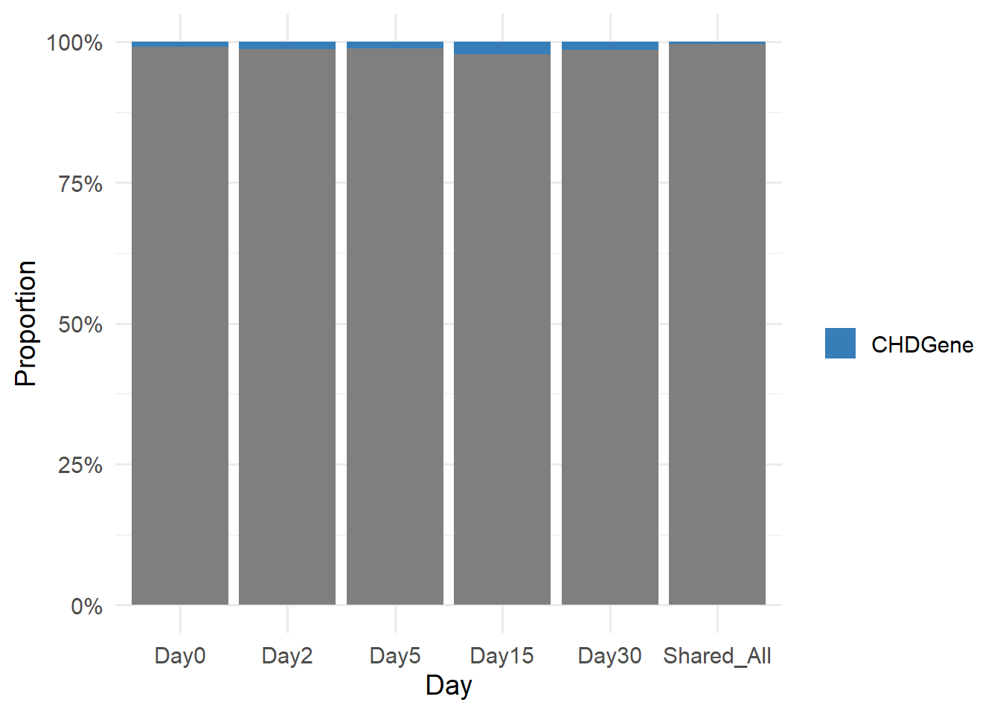

Last updated: 2026-01-28
Checks: 7 0
Knit directory: CrossSpecies_CM_Diff_RNA/
This reproducible R Markdown analysis was created with workflowr (version 1.7.2). The Checks tab describes the reproducibility checks that were applied when the results were created. The Past versions tab lists the development history.
Great! Since the R Markdown file has been committed to the Git repository, you know the exact version of the code that produced these results.
Great job! The global environment was empty. Objects defined in the global environment can affect the analysis in your R Markdown file in unknown ways. For reproduciblity it’s best to always run the code in an empty environment.
The command set.seed(20251129) was run prior to running
the code in the R Markdown file. Setting a seed ensures that any results
that rely on randomness, e.g. subsampling or permutations, are
reproducible.
Great job! Recording the operating system, R version, and package versions is critical for reproducibility.
Nice! There were no cached chunks for this analysis, so you can be confident that you successfully produced the results during this run.
Great job! Using relative paths to the files within your workflowr project makes it easier to run your code on other machines.
Great! You are using Git for version control. Tracking code development and connecting the code version to the results is critical for reproducibility.
The results in this page were generated with repository version 3686961. See the Past versions tab to see a history of the changes made to the R Markdown and HTML files.
Note that you need to be careful to ensure that all relevant files for
the analysis have been committed to Git prior to generating the results
(you can use wflow_publish or
wflow_git_commit). workflowr only checks the R Markdown
file, but you know if there are other scripts or data files that it
depends on. Below is the status of the Git repository when the results
were generated:
Ignored files:
Ignored: .Rhistory
Ignored: .Rproj.user/
Ignored: data/
Note that any generated files, e.g. HTML, png, CSS, etc., are not included in this status report because it is ok for generated content to have uncommitted changes.
These are the previous versions of the repository in which changes were
made to the R Markdown
(analysis/RNA_CHDGene_Comp_Species.Rmd) and HTML
(docs/RNA_CHDGene_Comp_Species.html) files. If you’ve
configured a remote Git repository (see ?wflow_git_remote),
click on the hyperlinks in the table below to view the files as they
were in that past version.
| File | Version | Author | Date | Message |
|---|---|---|---|---|
| Rmd | 3686961 | John D. Hurley | 2026-01-28 | publish change |
| Rmd | 582a67d | John D. Hurley | 2026-01-28 | Code block headers added |
| Rmd | 5a82fc9 | John D. Hurley | 2026-01-28 | CHDGene website |
| Rmd | 085c1db | John D. Hurley | 2026-01-28 | Finalizing CorHeatMap |
#Loading Libraries
library(dplyr)
library(tidyr)
library(stringr)
library(ggplot2)
library(biomaRt)
library(tidyverse)
library(readxl)
library(readr)
library(reshape2)
library(circlize)
library(grid)
library(stringr)
library(org.Hs.eg.db)
library(AnnotationDbi)
library(gprofiler2)
library(purrr)
# install.packages("biomartr")
#Loading R Objects
# quadrant_gene_lists <- readRDS("data/DGE/quadrant_gene_lists_DayBefore.RDS")
# chdgene_table <- readRDS("data/DGE/chdgene_table.RDS")
Day0_DEGs_HC <- readRDS("data/DGE/Species/Day0_DEGs_HC.RDS")
Day2_DEGs_HC <- readRDS("data/DGE/Species/Day2_DEGs_HC.RDS")
Day5_DEGs_HC <- readRDS("data/DGE/Species/Day5_DEGs_HC.RDS")
Day15_DEGs_HC <- readRDS("data/DGE/Species/Day15_DEGs_HC.RDS")
Day30_DEGs_HC <- readRDS("data/DGE/Species/Day30_DEGs_HC.RDS")
all_intersections <- readRDS("data/DGE/Species/all_intersections.RDS")generate_volcano_plot <- function(toptable, title) {
# #check for entrezid
# if(!"Entrez_ID" %in% colnames(toptable)) stop("Entrez_ID col not present")
#
#make significance labels
toptable <- toptable %>%
mutate(Significance = case_when(
logFC > 0 & adj.P.Val < 0.05 ~ "Upregulated",
logFC < 0 & adj.P.Val < 0.05 ~ "Downregulated",
TRUE ~ "Not Significant"
))
#factor significance
toptable$Significance <- factor(
toptable$Significance,
levels = c("Upregulated",
"Not Significant",
"Downregulated")
)
#count genes in each category
upgenes <- sum(toptable$Significance == "Upregulated")
nsgenes <- sum(toptable$Significance == "Not Significant")
downgenes <- sum(toptable$Significance == "Downregulated")
#labels for legend
legend_lab <- c(
paste0("Upregulated: ", upgenes),
paste0("Not Significant: ", nsgenes),
paste0("Downregulated: ", downgenes)
)
#colors
color_map <- c("Upregulated" = "blue",
"Not Significant" = "grey30",
"Downregulated" = "red")
#generate volcano plots
p <- ggplot(toptable, aes(x = logFC,
y = -log10(P.Value),
color = Significance)) +
geom_point_rast(alpha = 0.8, size = 3) +
scale_color_manual(values = color_map,
labels = legend_lab,
breaks = c("Upregulated",
"Not Significant",
"Downregulated")) +
xlim(-20,20) +
labs(title = title,
x = expression("log"[2]*"FC"),
y = expression("-log"[10]*"p-value")) +
# theme_custom() +
theme(legend.position = "right")
return(p)
}generate_volcano_plot_CHDGene <- function(toptable, title, chdgene_genes = NULL) {
# Determine significance
toptable <- toptable %>%
mutate(Significance = case_when(
logFC > 0 & adj.P.Val < 0.05 ~ "Upregulated",
logFC < 0 & adj.P.Val < 0.05 ~ "Downregulated",
TRUE ~ "Not Significant"
))
toptable$Significance <- factor(
toptable$Significance,
levels = c("Upregulated", "Not Significant", "Downregulated")
)
# Mark GWAS hits
toptable <- toptable %>%
mutate(highlight = if_else(Gene %in% chdgene_genes, TRUE, FALSE))
# Split data for layers
df_non_chdgene <- toptable %>% filter(!highlight)
df_chdgene <- toptable %>% filter(highlight)
# Colors for significance
color_map <- c(
"Upregulated" = "blue",
"Not Significant" = "grey30",
"Downregulated" = "red"
)
p <- ggplot() +
# Non-chdgene points
geom_point(data = df_non_chdgene,
aes(x = logFC, y = -log10(P.Value), color = Significance),
alpha = 0.8, size = 3) +
scale_color_manual(values = color_map) +
# GWAS points on top with outline
geom_point(data = df_chdgene,
aes(x = logFC, y = -log10(P.Value), fill = Significance),
shape = 21, color = "limegreen", size = 4, stroke = 1.5) +
# Optional: label chdgene genes
# geom_text_repel(data = df_gwas,
# aes(x = logFC, y = -log10(P.Value), label = Gene),
# size = 3, fontface = "bold", color = "black", max.overlaps = 20) +
xlim(-20, 20) +
labs(title = title,
x = expression("log"[2]*"FC"),
y = expression("-log"[10]*"p-value")) +
theme_bw() +
theme(legend.position = "right") +
guides(color = guide_legend(override.aes = list(size = 3)),
fill = guide_legend(override.aes = list(size = 3)))
return(p)
}chdgene_table <- read.csv("C:/Users/jdhurley/Downloads/chdgene_table.csv")
saveRDS(chdgene_table,"data/DGE/chdgene_table.RDS")
# Make a copy to be safe
chdgene_table_copy <- chdgene_table
# Check
colnames(chdgene_table_copy)[1] "Gene" "CHD.classification"
[3] "Extra.cardiac.phenotype" "Inheritance.mode"
[5] "Ranking" "Supporting.References" # Should include "Gene"
# dim(chdgene_table_copy)
# length(unique(chdgene_table_copy$Gene))
# unique(chdgene_table_copy$Gene)
# Connect to Ensembl
ensembl <- useMart("ensembl", dataset = "hsapiens_gene_ensembl")
# Your Day0-only DEGs (Ensembl IDs)
day0_only <- all_intersections$Day0
# Map Ensembl IDs to gene symbols
mapping <- getBM(
attributes = c("ensembl_gene_id", "hgnc_symbol"),
filters = "ensembl_gene_id",
values = day0_only,
mart = ensembl
)
# Remove empty mappings
mapping <- mapping[mapping$hgnc_symbol != "", ]
# Filter by your known gene list
known_genes <- chdgene_table_copy$Gene
day0_filtered <- mapping$ensembl_gene_id[mapping$hgnc_symbol %in% known_genes]
# Optional: get gene symbols for filtered genes
day0_filtered_symbols <- mapping$hgnc_symbol[mapping$hgnc_symbol %in% known_genes]
saveRDS(day0_filtered_symbols,"data/DGE/Species/Day0_Only_DEGs_CHDGenes.RDS")
# Your day2-only DEGs (Ensembl IDs)
day2_only <- all_intersections$Day2
# Map Ensembl IDs to gene symbols
mapping <- getBM(
attributes = c("ensembl_gene_id", "hgnc_symbol"),
filters = "ensembl_gene_id",
values = day2_only,
mart = ensembl
)
# Remove empty mappings
mapping <- mapping[mapping$hgnc_symbol != "", ]
# Filter by your known gene list
known_genes <- chdgene_table_copy$Gene
day2_filtered <- mapping$ensembl_gene_id[mapping$hgnc_symbol %in% known_genes]
# Optional: get gene symbols for filtered genes
day2_filtered_symbols <- mapping$hgnc_symbol[mapping$hgnc_symbol %in% known_genes]
saveRDS(day2_filtered_symbols,"data/DGE/Species/Day2_Only_DEGs_CHDGenes.RDS")
# Your day2-only DEGs (Ensembl IDs)
day5_only <- all_intersections$Day5
# Map Ensembl IDs to gene symbols
mapping <- getBM(
attributes = c("ensembl_gene_id", "hgnc_symbol"),
filters = "ensembl_gene_id",
values = day5_only,
mart = ensembl
)
# Remove empty mappings
mapping <- mapping[mapping$hgnc_symbol != "", ]
# Filter by your known gene list
known_genes <- chdgene_table_copy$Gene
day5_filtered <- mapping$ensembl_gene_id[mapping$hgnc_symbol %in% known_genes]
# Optional: get gene symbols for filtered genes
day5_filtered_symbols <- mapping$hgnc_symbol[mapping$hgnc_symbol %in% known_genes]
saveRDS(day5_filtered_symbols,"data/DGE/Species/day5_Only_DEGs_CHDGenes.RDS")
# Your day2-only DEGs (Ensembl IDs)
day15_only <- all_intersections$Day15
# Map Ensembl IDs to gene symbols
mapping <- getBM(
attributes = c("ensembl_gene_id", "hgnc_symbol"),
filters = "ensembl_gene_id",
values = day15_only,
mart = ensembl
)
# Remove empty mappings
mapping <- mapping[mapping$hgnc_symbol != "", ]
# Filter by your known gene list
known_genes <- chdgene_table_copy$Gene
day15_filtered <- mapping$ensembl_gene_id[mapping$hgnc_symbol %in% known_genes]
# Optional: get gene symbols for filtered genes
day15_filtered_symbols <- mapping$hgnc_symbol[mapping$hgnc_symbol %in% known_genes]
saveRDS(day15_filtered_symbols,"data/DGE/Species/day15_Only_DEGs_CHDGenes.RDS")
# Your day2-only DEGs (Ensembl IDs)
day30_only <- all_intersections$Day30
# Map Ensembl IDs to gene symbols
mapping <- getBM(
attributes = c("ensembl_gene_id", "hgnc_symbol"),
filters = "ensembl_gene_id",
values = day30_only,
mart = ensembl
)
# Remove empty mappings
mapping <- mapping[mapping$hgnc_symbol != "", ]
# Filter by your known gene list
known_genes <- chdgene_table_copy$Gene
day30_filtered <- mapping$ensembl_gene_id[mapping$hgnc_symbol %in% known_genes]
# Optional: get gene symbols for filtered genes
day30_filtered_symbols <- mapping$hgnc_symbol[mapping$hgnc_symbol %in% known_genes]
saveRDS(day30_filtered_symbols,"data/DGE/Species/day30_Only_DEGs_CHDGenes.RDS")
# Your day2-only DEGs (Ensembl IDs)
AllDays_only <- all_intersections$`Day0&Day2&Day5&Day15&Day30`
# Map Ensembl IDs to gene symbols
mapping <- getBM(
attributes = c("ensembl_gene_id", "hgnc_symbol"),
filters = "ensembl_gene_id",
values = AllDays_only,
mart = ensembl
)
# Remove empty mappings
mapping <- mapping[mapping$hgnc_symbol != "", ]
# Filter by your known gene list
known_genes <- chdgene_table_copy$Gene
AllDays_filtered <- mapping$ensembl_gene_id[mapping$hgnc_symbol %in% known_genes]
# Optional: get gene symbols for filtered genes
AllDays_filtered_symbols <- mapping$hgnc_symbol[mapping$hgnc_symbol %in% known_genes]
saveRDS(AllDays_filtered_symbols,"data/DGE/Species/AllDays_Only_DEGs_CHDGenes.RDS") # Create the table
Day0_Only_DEGs_ChiSq <- matrix(c(16, 1719, 8, 1184), nrow = 2, byrow = TRUE)
rownames(Day0_Only_DEGs_ChiSq) <- c("Day0", "Day0-2-5-15-30")
colnames(Day0_Only_DEGs_ChiSq) <- c("CHDGene", "Non-CHDGene")
# Run chi-square test
chisq.test(Day0_Only_DEGs_ChiSq)
Pearson's Chi-squared test with Yates' continuity correction
data: Day0_Only_DEGs_ChiSq
X-squared = 0.2824, df = 1, p-value = 0.5951# Create the table
Day2_Only_DEGs_ChiSq <- matrix(c(6, 441, 8, 1184), nrow = 2, byrow = TRUE)
rownames(Day2_Only_DEGs_ChiSq) <- c("Day2", "Day0-2-5-15-30")
colnames(Day2_Only_DEGs_ChiSq) <- c("CHDGene", "Non-CHDGene")
# Run chi-square test
chisq.test(Day2_Only_DEGs_ChiSq)
Pearson's Chi-squared test with Yates' continuity correction
data: Day2_Only_DEGs_ChiSq
X-squared = 1.0274, df = 1, p-value = 0.3108# Create the table
Day5_Only_DEGs_ChiSq <- matrix(c(6,499, 8, 1184), nrow = 2, byrow = TRUE)
rownames(Day5_Only_DEGs_ChiSq) <- c("Day5", "Day0-2-5-15-30")
colnames(Day5_Only_DEGs_ChiSq) <- c("CHDGene", "Non-CHDGene")
# Run chi-square test
chisq.test(Day5_Only_DEGs_ChiSq)
Pearson's Chi-squared test with Yates' continuity correction
data: Day5_Only_DEGs_ChiSq
X-squared = 0.613, df = 1, p-value = 0.4337# Create the table
Day15_Only_DEGs_ChiSq <- matrix(c(14,602, 8, 1184), nrow = 2, byrow = TRUE)
rownames(Day15_Only_DEGs_ChiSq) <- c("Day15", "Day0-2-5-15-30")
colnames(Day15_Only_DEGs_ChiSq) <- c("CHDGene", "Non-CHDGene")
# Run chi-square test
chisq.test(Day15_Only_DEGs_ChiSq)
Pearson's Chi-squared test with Yates' continuity correction
data: Day15_Only_DEGs_ChiSq
X-squared = 7.3855, df = 1, p-value = 0.006575# Create the table
Day30_Only_DEGs_ChiSq <- matrix(c(18,1217, 8, 1184), nrow = 2, byrow = TRUE)
rownames(Day30_Only_DEGs_ChiSq) <- c("Day30", "Day0-2-5-15-30")
colnames(Day30_Only_DEGs_ChiSq) <- c("CHDGene", "Non-CHDGene")
# Run chi-square test
chisq.test(Day30_Only_DEGs_ChiSq)
Pearson's Chi-squared test with Yates' continuity correction
data: Day30_Only_DEGs_ChiSq
X-squared = 2.8359, df = 1, p-value = 0.09218df <- data.frame(
Day = c("Day0", "Day2", "Day5", "Day15", "Day30","Shared_All"),
CHDGene = c(16,6,6,14,18,8),
Non_CHDGene = c(1719,441,499,602,1217,1884)
)
# Convert to long format for ggplot
df_long <- df %>%
pivot_longer(cols = c(CHDGene, Non_CHDGene),
names_to = "Type",
values_to = "Count") %>%
group_by(Day) %>%
mutate(Proportion = Count / sum(Count)) # calculate proportions
df_long$Day <- factor(df_long$Day, levels = c("Day0", "Day2", "Day5", "Day15", "Day30","Shared_All"), ordered = TRUE)
ggplot(df_long, aes(x = Day, y = Proportion, fill = Type)) +
geom_bar(stat = "identity") +
scale_y_continuous(labels = scales::percent_format()) + # show % on y-axis
scale_fill_manual(values = c("DEGs" = "#E41A1C", "CHDGene" = "#377EB8")) + # custom colors
labs(y = "Proportion", x = "Day", fill = "") +
theme_minimal(base_size = 14)
# git -> commit all changes
# git -> push
# wflow_publish("analysis/RNA_CHDGene_Comp_Species.Rmd")
sessionInfo()R version 4.5.1 (2025-06-13 ucrt)
Platform: x86_64-w64-mingw32/x64
Running under: Windows 11 x64 (build 26100)
Matrix products: default
LAPACK version 3.12.1
locale:
[1] LC_COLLATE=English_United States.utf8
[2] LC_CTYPE=English_United States.utf8
[3] LC_MONETARY=English_United States.utf8
[4] LC_NUMERIC=C
[5] LC_TIME=English_United States.utf8
time zone: America/Chicago
tzcode source: internal
attached base packages:
[1] stats4 grid stats graphics grDevices utils datasets
[8] methods base
other attached packages:
[1] gprofiler2_0.2.4 org.Hs.eg.db_3.21.0 AnnotationDbi_1.70.0
[4] IRanges_2.42.0 S4Vectors_0.46.0 Biobase_2.68.0
[7] BiocGenerics_0.54.0 generics_0.1.4 circlize_0.4.17
[10] reshape2_1.4.5 readxl_1.4.5 lubridate_1.9.4
[13] forcats_1.0.1 purrr_1.1.0 readr_2.1.5
[16] tibble_3.3.0 tidyverse_2.0.0 biomaRt_2.64.0
[19] ggplot2_4.0.0 stringr_1.5.2 tidyr_1.3.1
[22] dplyr_1.1.4 workflowr_1.7.2
loaded via a namespace (and not attached):
[1] DBI_1.2.3 httr2_1.2.2 rlang_1.1.6
[4] magrittr_2.0.3 git2r_0.36.2 otel_0.2.0
[7] compiler_4.5.1 RSQLite_2.4.3 getPass_0.2-4
[10] png_0.1-8 callr_3.7.6 vctrs_0.6.5
[13] pkgconfig_2.0.3 shape_1.4.6.1 crayon_1.5.3
[16] fastmap_1.2.0 dbplyr_2.5.1 XVector_0.48.0
[19] labeling_0.4.3 promises_1.3.3 rmarkdown_2.30
[22] tzdb_0.5.0 UCSC.utils_1.4.0 ps_1.9.1
[25] bit_4.6.0 xfun_0.53 cachem_1.1.0
[28] GenomeInfoDb_1.44.3 jsonlite_2.0.0 progress_1.2.3
[31] blob_1.3.0 later_1.4.4 prettyunits_1.2.0
[34] R6_2.6.1 bslib_0.9.0 stringi_1.8.7
[37] RColorBrewer_1.1-3 jquerylib_0.1.4 cellranger_1.1.0
[40] Rcpp_1.1.0 knitr_1.51 httpuv_1.6.16
[43] timechange_0.3.0 tidyselect_1.2.1 rstudioapi_0.18.0
[46] yaml_2.3.10 curl_7.0.0 processx_3.8.6
[49] plyr_1.8.9 withr_3.0.2 KEGGREST_1.48.1
[52] S7_0.2.0 evaluate_1.0.5 BiocFileCache_2.16.2
[55] xml2_1.5.1 Biostrings_2.76.0 pillar_1.11.1
[58] filelock_1.0.3 whisker_0.4.1 plotly_4.11.0
[61] rprojroot_2.1.1 hms_1.1.4 scales_1.4.0
[64] glue_1.8.0 lazyeval_0.2.2 tools_4.5.1
[67] data.table_1.18.0 fs_1.6.6 colorspace_2.1-2
[70] GenomeInfoDbData_1.2.14 cli_3.6.5 rappdirs_0.3.4
[73] viridisLite_0.4.2 gtable_0.3.6 sass_0.4.10
[76] digest_0.6.37 htmlwidgets_1.6.4 farver_2.1.2
[79] memoise_2.0.1 htmltools_0.5.8.1 lifecycle_1.0.5
[82] httr_1.4.7 GlobalOptions_0.1.3 bit64_4.6.0-1